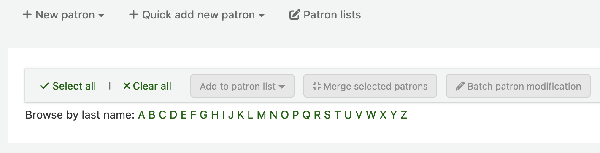

I18N/L10N
此等偏好控制國際化與在地化的設定。
Get there: More > Administration > Global system preferences > I18N/L10N
AddressFormat
詢問：郵寄地址的格式 ___
值：
德國式 ([地址] [門牌] - [郵遞區號] [縣市] - [國名])
法國式 ([門牌] [地址] - [郵遞區號] [縣市] - [國名])
US 式 ([門牌]、[地址] - [縣市]、[郵遞區號]、[國名])
預設: US 式 ([門牌]、[地址] - [縣市]、[郵遞區號]、[國名])
說明：
此偏好控制 Koha 在讀者記錄內顯示其地址資訊的方式。
字母
Asks: Use the alphabet ___ for lists of browsable letters. This should be a space separated list of uppercase letters. Hint: Changing collation in the database for the ‘surname’ column of the ‘borrowers’ table is helpful to make browsing by last name work in members-home.pl when using an alphabet outside of A-Z.
預設：A B C D E F G H I J K L M N O P Q R S T U V W X Y Z
說明：
此偏好允許您設定額外的字母供 Koha 讀者瀏覽。

CalendarFirstDayOfWeek
詢問：以 ___ 為日曆上每週開始的第一天。
值：
星期日
星期一
星期二
星期三
星期四
星期五
星期六
預設值：星期日
說明：
Using this preference, you can control what day shows as the first day of the week in the calendar pop ups throughout Koha and on the Calendar tool. If you change this preference and don’t see a change in your browser, try clearing your cache since it makes changes to the Javascript on these pages.
dateformat
詢問： 日期格式為 ___
值：
dd.mm.yyyy
yyyy-mm-dd
dd/mm/yyyy
mm/dd/yyyy
預設值：mm/dd/yyyy
說明：
This preference controls how the date is displayed.
The options are: mm/dd/yyyy (e.g., 04/24/2010 for 24 April 2010); dd/mm/yyyy (24/04/2010); dd.mm.yyyy (24.04.2010); the ISO (International Organization for Standardization) format yyyy-mm-dd (2010-04-24).
The ISO format would primarily be used by libraries with locations in multiple nations that may use different date formats, to have a single display type.
語言
詢問：以下列的語系為館員介面的預設語系
值：
English (en)
Default: English (en)
备注
To install additional languages, please refer to the Koha Wiki page Installation of additional languages for OPAC and INTRANET staff client. Once an additional language are installed, it will show as an option in this preference.
OPACLanguages
詢問：以下列的語系為 OPAC 的預設語系
值：
English (en)
Default: English (en)
备注
To install additional languages, please refer to the Koha Wiki page Installation of additional languages for OPAC and INTRANET staff client. Once an additional language are installed, it will show as an option in this preference.
opaclanguagesdisplay
詢問：___ 讀者選擇 OPAC 的語系。
值：
不允許
允許
預設：不允許
說明：
When Allow is selected, patrons will see a language selector on the public catalog. Use the OpacLangSelectorMode preference to control where this selector will appear on the page.
When Don’t allow is selected, there is no option for a patron to choose their preferred language on the public catalog.
TimeFormat
詢問：時間格式 ___
值：
12 hour format (e.g. “02:18 PM”)
24 hour format (e.g. “14:18”)
Default: 24 hour format (e.g. “14:18”)
TranslateNotices
詢問：___ 將翻譯的通知。設定之後，將從 “通知與收條” 介面翻譯其內容。將以讀者指定語文將通知送給讀者。
值：
不允許
允許
預設：不允許
說明：
If set to ‘Allow’ it is possible to choose a ‘Preferred language for notices’ when creating a new patron account in the staff interface, or for the patron to do this themselves from their messaging options when logged into their account on the OPAC.